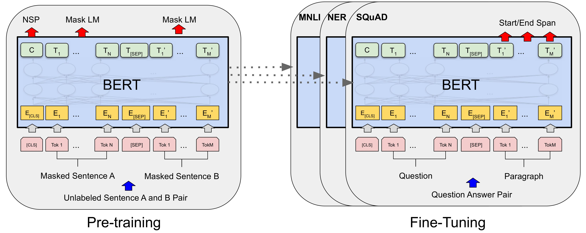

大模型微调基础#
Author by: 许起星
在人工智能快速发展的背景下，大模型展现出强大的通用能力，能够理解自然语言、掌握常识知识，甚至具备一定的逻辑推理能力。这些模型经过大规模数据训练，已经成为具备通用智能的基础系统，广泛应用于各类任务中。
然而，这种强大的通用性也伴随着一个固有的局限：它们对任何特定领域的理解都不是最深入的。一个通用的语言模型，就像一位知识渊博的通识学者，涉猎广泛，但并非特定领域的专家。对于某些需要深入领域知识的场景，比如法律咨询、风格化写作，或企业级客户服务，通用模型往往难以满足实际需求。这也暴露出一个关键问题：模型“懂得很多”，但缺乏“针对性”。
在实际应用中，我们往往需要的是专家。我们需要一个能理解医学术语的临床诊断助手，一个熟悉法律条文的合同审查工具，或是一个能模仿特定品牌语气的市场文案撰写 AI。如何弥合通用模型的基础能力与特定应用场景的专业需求之间的鸿沟？这正是“微调”（Fine-tuning）技术所要解决的核心问题。微调并非创造一个全新的模型，而是基于一个已经训练好的通用模型，利用与特定任务相关的较小规模数据，对其进行针对性地再训练，从而使模型的能力与特定目标对齐。这可以理解为在一个通用模型上，补充“专业课”，让它从“通才”转向“专才”，符合人们实际的需要。
本章将系统介绍微调的基础知识，包含其起源、主流微调方法、大模型基本的训练流程和微调的典型应用场景，帮助读者理解如何将通用模型转化为面向特定任务的实用工具，同时讨论微调过程中面临的挑战与解决思路。
微调的起源#
每一场技术革命，都源于对现有困境的深刻洞察与不懈突破，而微调范式的确立，正是人工智能领域一场影响深远的思想与工程革命。要理解微调的价值，我们有必要回溯它的源头，探寻这一范式是如何在技术演进的浪潮中应运而生的。在本小节中，我们以自然语言领域为背景，从“迁移学习”（Transfer Learning, TL）的角度，将微调的发展娓娓道来。
孤岛时代#
在人工智能的早期发展阶段，特别是在自然语言处理（NLP）领域，模型的构建遵循一种“各自为战”的模式。每个特定的任务，无论是文本分类、情感分析还是机器翻译，都需要从零开始训练一个专门的模型 。这些早期模型主要依赖于基于规则的系统或传统的统计方法 。基于规则的方法需要语言学专家手动编写大量的语法和语义规则，这种方式不仅耗时耗力，而且泛化能力极差，难以适应语言的复杂性和多变性。随着统计方法的兴起，模型开始从数据中学习模式，但它们依然是任务隔离的，为一个任务学习到的知识无法被另一个任务所利用 。这种独立训练的模式在当时是符合逻辑的，但也带来了三个难以回避的根本性问题。
首先，模型对数据重度依赖。由于模型是从一张白纸开始学习，它对世界的全部认知都来源于所提供的训练数据。为了让模型达到可用的性能水平，必须为其准备规模庞大且经过精心标注的专属数据集。这在许多领域都意味着高昂的人工成本和时间成本，构成了应用落地的一道高墙。
其次，已学习到的知识难以迁移。在为一个任务（例如，训练一个新闻分类器）投入大量资源训练好一个模型后，其学到的关于语言的语法、语义等知识，被完全固化在了这个模型的参数之中。当开始一个新任务时（例如，训练一个电影评论的情感分析器），上一个模型的知识财富无法被继承。每一个新项目都意味着一次“另起炉灶”，导致了整个领域内系统性的效率低下和资源浪费。
最后，随之而来的是高昂的训练成本。每一个模型的独立训练都要求完整的计算资源投入，这不仅拖慢了研究和开发的迭代速度，也使得高性能 NLP 技术的实践在很大程度上局限于少数拥有雄厚计算资源和数据积累的机构。
迁移学习#
面对独立训练模式的种种局限，学术界和工业界的研究者们开始探寻一种更高效的路径。一个自然而然的想法是，既然人类在学习新技能时会利用已有的知识，那么机器是否也能做到这一点？这一思考，催生了“迁移学习”思想的逐步演进。
迁移学习的核心理念，是将从一个任务（源任务）中学到的知识，应用于解决另一个不同但相关的任务（目标任务）。这一概念并非凭空出现，其思想根源可以追溯到心理学中关于学习迁移的研究。在机器学习领域，关于神经网络中迁移学习的正式探讨最早出现在 1976 年 Bozinovski 和 Fulgosi 的论文中，他们提出了该课题的数学和几何模型 。在 NLP 的早期探索中，这通常表现为使用在一个大型语料库上训练出的词向量（如 Word2Vec、GloVe）。这些预先训练好的词向量捕捉了词语之间丰富的语义关系，当把它们作为下游任务模型的输入特征时，相当于为模型注入了基础的语言知识，使其不再需要从零开始学习词语的含义。它的价值在于其高效性，尤其是在目标任务数据稀缺的情况下，模型通过利用在大型数据集上预先学到的通用知识（例如，图像中的边缘、纹理特征，或语言中的语法、语义结构），在面对新任务时不再需要从随机状态开始学习，而是站在巨人肩上去学习。这不仅能显著减少对标注数据的依赖，降低数据门槛，还能节省大量的计算资源和训练时间 。
这一步虽然意义重大，但它仅仅迁移了相对浅层的词汇知识。模型的更高层网络，即负责理解句子结构、上下文和复杂语义的部分，依然需要从头学习。研究者们很快意识到，如果能将整个模型的知识都进行迁移，效果可能会远超预期。于是，使用在一个大型通用任务（如语言建模）上完整训练的模型作为起点，再针对特定任务进行后续训练的思路开始出现。这些早期的探索虽然方向正确，但往往缺乏一套系统、稳定且能带来显著提升的方法论，直到 2018 年，真正的突破才到来。
预训练-微调#
2018 年是现代 NLP 发展史上的分水岭。以 ULMFiT 和 BERT 为代表的一系列工作，不仅在多个 NLP 基准测试中取得了突破性的成果，更重要的是，它们共同将“预训练-微调”塑造成了一个清晰、高效且可复制的标准化范式，并使其迅速成为领域内的主流。
ULMFiT 首次系统性地展示了一套完整的语言模型微调方法，证明了通过精心设计的技术（如判别性学习率和逐层解冻），可以在数据相对较少的情况下，取得非常出色的任务表现。它为后续的工作提供了宝贵的思想启蒙和技术铺垫。
紧随其后的 BERT，则凭借其创新的 Transformer 架构和深刻的双向预训练任务（Masked Language Model），将这一范式的潜力发挥到了极致。BERT 的巨大成功，及其简洁明了的应用流程，使其迅速被广为采纳。“预训练-微调”自此不再仅仅是一种可行的技术思路，而是成为了开发高性能 NLP 模型的首选路径和黄金标准。

这一新范式将模型开发清晰地划分为两个阶段：
第一阶段：预训练（Pre-training）。 在这个阶段，模型在庞大的、无特定任务标签的通用文本（如维基百科、各类网页）上进行训练。其目标并非解决任何具体问题，而是学习语言本身内在的规律，包括词汇、语法、语义关系和一定程度的世界知识。这个过程产出的是一个强大的通用基础模型，它如同一个完成了通识教育的大学毕业生，具备了广博的知识背景和学习能力。
第二阶段：微调（Fine-tuning）。 在这个阶段，我们针对一个具体的下游任务（如情感分析），使用该任务专属的、规模相对较小的标注数据，对预训练好的模型进行进一步的训练。这个过程相当于为那位“大学毕业生”提供专业方向的在职培训。由于模型已经具备了深厚的语言基础，微调过程通常非常高效，只需对模型的参数进行“微小调整”，就能使其迅速掌握新任务的要领。
“预训练-微调”范式的确立，从根本上解决了独立训练时代的三个核心困境。它提供了一个强大的起点，不再“从零开始”；它使得从通用数据中学到的知识得以高效迁移，打破了“知识孤立”；它也因此极大地降低了对下游任务标注数据的依赖，缓解了“数据饥渴”的问题。这场深刻的变革，为之后更大规模、更强能力的语言模型的出现和应用，铺平了坚实的道路。
主流微调方法#
随着微调技术的发展，一系列不同的方法应运而生，以应对不同的性能需求、资源限制和任务目标。目前，主流的微调方法可以从不同维度进行分类，而理解这些分类方式，有助于我们根据具体需求选择最合适的技术路线。本章将从以下两个核心维度展开介绍：微调的参数规模和训练目标与流程。此外，我们还将在本节最后部分对微调方法的前沿趋势进行简单介绍。
按微调参数规模划分#
根据在微调过程中更新的参数数量，微调方法主要分为两大类：全参数微调（Full-Parameter Fine-Tuning, FPFT）和参数高效微调（Parameter-Efficient Fine-Tuning, PEFT）。这两种方法在资源消耗、存储成本和最终效果之间有着不同的权衡。
全参数微调是最早期也是最直接的思路。它采取了一种“全面重塑”的策略，即在微调过程中，更新模型内部所有或绝大部分的参数。这种方法的逻辑很清晰：让模型的每一个“神经元”都参与到对新知识的学习中，从而最大程度地适应新任务的数据分布和内在规律。在追求极致性能的场景下，全参数微调理论上能够达到最佳效果，因为它给了模型最充分的自由度去调整自身。
但这种彻底性也带来了沉重的负担，对于参数量已达千亿级别的大模型而言，全参数微调的成本是惊人的。它不仅需要动用由多张顶级 GPU 组成的昂贵计算集群，还会产生巨大的存储开销，即每微调一个新任务，就意味着诞生一个与原始模型同样庞大的新模型副本。在需要支持多个不同业务场景的实际应用中，这种模式很快会变得难以为继。
正因如此，学术界和工业界将目光转向了更具经济效益的方案——参数高效微调。PEFT 的核心理念从“全面重塑”转向了 “精准调校” 。它建立在一个关键假设之上：大模型强大的泛化能力来源于其庞大而稳固的预训练参数，我们或许并不需要改动这个基础，而只需增加或修改一小部分参数，就能引导模型的行为以适应新任务。
在这种思想的指导下，一系列精巧的技术应运而生。例如，Adapter Tuning 通过在模型的固定层之间插入一些小型的、可训练的“适配器”模块，将训练任务集中在这些新增的、参数量极小的模块上。而更为主流的 LoRA（Low-Rank Adaptation） 技术，则通过一个巧妙的数学假设，认为模型权重的调整量可以用两个更小的矩阵来近似，从而将需要训练的参数量锐减了数个数量级，通常不到原始参数的 0.1% 。除了像 Adapter 和 LoRA 这样通过“添加”新参数的思路外，参数高效微调还衍生出其他流派。例如，以 Prompt Tuning 和 Prefix-Tuning 为代表的“提示式“微调，它不在模型内部动刀，而是在输入端增加一段可训练的虚拟提示来引导模型；此外，还有“选择式”微调，即仅选择模型中极少数关键参数（如偏置项）进行更新。这些方法的共同目标都是以最小的代价，实现对大模型行为的精准调校。
PEFT 的出现极大地降低了微调的门槛。它显著节约了计算和存储资源，使得在单个或少量 GPU 上训练大模型成为现实。由于每个任务仅对应一个轻量的“参数补丁”，模型的部署和管理也变得异常灵活。尽管在某些任务的绝对性能上，PEFT 可能略逊于全力以赴的 FPFT ，但它以极高的性价比，成为了当前大模型应用落地中最为普遍和实际的选择。
按训练流程划分#
除了参数的调整范围，微调的目标与流程也呈现出明显的阶段性。一个完整的微调过程，往往可以看作是多个递进的环节：首先是知识层面的补充，然后是行为层面的对齐。
第一个环节是 继续预训练（Continued Pre-training）。当一个在通用数据上训练好的模型，需要被应用于一个全新的领域时，它可能无法很好地适应这个全新领域。继续预训练正是为了解决这个问题，它旨在让模型更好地理解和处理特定领域的数据。
举一个具体的例子，假设我们有一个在海量英文互联网数据上预训练的通用大模型，现在希望它能处理通用的中文任务。此时，最主要的“域”差异是语言域。如果直接使用原始模型，那么它将难以胜任中文的语法和词汇。因此，我们可以收集海量的通用中文语料（例如中文网页、百科、书籍等），让模型在这个新的数据集上进行无监督的继续预训练。经过这个过程，它就从一个纯粹的英文模型，转变为一个初步掌握了中文语言规律的通用中文大模型。其核心目标是领域适应，而在此例中主要体现为跨语言的适应。
在模型掌握了中文后，我们便需要让它学会执行具体的任务，这就进入了第二个环节：有监督微调（Supervised Fine-tuning, SFT）。与继续预训练不同，SFT 是一个有监督的过程，其目的是优化模型在特定任务上的表现。延续我们上面的例子：现在我们有了一个懂得中文的通用大模型，但它对任何专业领域的知识都了解不深，就像一个只会说中文的普通人。如果我们希望它在中文金融领域的特定子任务上表现出色，比如从一篇上千字的公司公告中，自动抽取出 “高管增持” 、“公司回购” 或 “重大合同” 等关键事件，那么这个通用模型就力不从心了。为了实现这一点，我们就需要通过 SFT 来注入专业的领域知识并训练其任务能力。我们会准备一个标注好的中文金融数据集，其中每条数据都是一篇公告原文（输入）和其中包含的关键事件信息（输出/标签）。通过在这个数据集上进行有监督的训练，模型就学会了如何精准地完成这个特定的信息抽取任务。SFT 的本质，是让模型在掌握语言的基础上进一步习得领域知识与任务能力。
在完成领域与任务适应后，还需进一步解决“如何与用户交互”的问题，这对应着第三个关键环节——指令微调（Instruction Fine-Tuning）。指令微调属于有监督微调的一种，它的目标是教会模型如何“学以致用”，即理解并遵循人类的指令来完成具体任务。训练数据由大量的 “指令-回答” 对构成，模型通过学习这些范例，逐渐掌握了作为智能助手与用户交互的行为模式。例如，它学会了如何进行文本摘要、如何回答特定问题、如何遵循格式要求。可以说，指令微调是实现模型与人类意图“行为对齐”的第一步，也是最基础的一步。
然而，无论是传统的 SFT 还是指令微调，其学习方式都依赖于模仿高质量的“标准答案”。这种范式存在两个局限：一是难以处理缺乏唯一正确答案、更多依赖主观偏好的任务；二是无法在无需再训练的情况下快速适应新任务。这两个问题，分别引出了两种更高级或不同维度的对齐范式基于人类反馈的强化学习（RLHF）与上下文学习（ICL）。
**基于人类反馈的强化学习（RLHF）**旨在解决主观性问题。它不再要求模型模仿一个完美的答案，而是通过引入人类的“偏好”作为更灵活的指导信号。通过训练一个奖励模型来模拟人类的评价标准，再利用强化学习算法让语言模型生成能获得更高奖励的回答，RLHF 使模型能够内化更复杂的价值观，其行为超越了简单的“正确”，向“优秀”和“负责任”迈进。
而**上下文学习（In-Context Learning, ICL）**则提供了另一种思路——“临时适应”。它并非一个训练流程，而是一种在模型使用时展现出的惊人能力。用户只需在输入提示中提供几个任务的示例，模型就能立刻“领会”其中的模式并加以应用，全程无需对模型参数进行任何修改。ICL 的这种“即时学习”特性，虽然效果不如永久性的微调来得深入和稳定，但为快速、零成本地测试和应用模型提供了极大的便利。
微调的前沿趋势#
在 SFT 和 RLHF 等主流微调方法日益成熟的同时，学术界和工业界仍在不断探索更高效、更稳定、更具创造性的模型优化路径。其中，直接偏好优化（DPO）和模型合并（Model Merging）是两个备受瞩目的前沿方向，它们分别代表了 “价值对齐” 和 “能力融合” 的未来趋势。
尽管基于 RLHF 在对齐模型价值观方面取得了巨大成功，但其训练流程的复杂性也带来了挑战。RLHF 通常需要“三步走”：训练一个 SFT 模型，然后训练一个独立的奖励模型，最后再通过强化学习算法（如 PPO）来优化 SFT 模型。这个过程不仅环节多、不稳定，而且对超参数非常敏感，给实际应用带来了较高的门槛。
**直接偏好优化（Direct Preference Optimization, DPO）**正是为了解决这一痛点而生。它巧妙地证明了，可以通过一个简单的数学变换，将原本需要强化学习来优化的奖励函数，直接融入到一个简单的损失函数中。DPO 的核心思想是，不再需要一个明确的奖励模型，而是直接利用人类的偏好数据（例如，回答 A 优于回答 B ）来优化语言模型本身。
在 DPO 的训练过程中，模型会同时计算它生成“更优回答 A ”和“更差回答 B ”的概率。其优化目标非常直观：最大化模型生成更优回答的概率，同时最小化其生成更差回答的概率。这一切都通过一个简洁的分类损失函数来完成，从而完全绕开了训练奖励模型和强化学习这两个复杂的步骤。
DPO 的出现，极大地简化了与人类偏好对齐的过程，使其变得更加稳定和高效。因为它在效果上能够媲美甚至超越 RLHF，同时又显著降低了训练的复杂度和计算成本，DPO 正在迅速成为开源社区和业界在进行价值对齐时的新宠。
此外，微调的传统思路是 “一个任务，一个模型” ，即使使用 PEFT ，也需要为每个新能力维护一个独立的“参数补丁”。然而，一个全新的思路正在涌现：我们能否像调制鸡尾酒一样，将不同模型的“专长”融合在一起，创造出一个无需额外训练就具备多种能力的新模型？这就是**模型合并（Model Merging）**技术。
模型合并指的是在参数层面，通过特定的数学算法，将两个或多个已经微调好的模型（它们的底层基础模型通常相同）的权重进行合并。例如，我们可以将一个在“代码生成”任务上微调过的模型，与另一个在“创意写作”任务上微调过的模型进行合并。理想情况下，最终得到的新模型将同时具备强大的代码生成和创意写作能力。
实现这一目标的算法多种多样，从简单的权重平均，到更复杂的球面线性插值（SLERP）和 TIES-merging 等方法。这些算法的核心目标，是在合并参数时尽可能地保留每个模型的专业能力，同时避免不同模型权重之间的“冲突”导致灾难性的性能下降。
模型合并技术最吸引人的地方在于，它是一种完全无需训练的能力获取方式。它为模型的“能力定制化”开辟了一条全新的、极具成本效益的路径。未来，用户或许不再需要从头微调，而是可以像逛应用商店一样，选择多个预先训练好的技能模型，并将它们一键合并，从而低成本、高效率地打造出满足自己独特需求的“全能”模型。
大模型训练流程#
大模型的复杂能力并非与生俱来，而是源于一个系统化、资源密集型的工程过程——模型训练。这一过程将海量的人类知识进行编码，并储存在一个由巨量参数构成的神经网络中。本章将详细介绍大模型训练的完整生命周期，从初始的数据处理，到核心的模型构建与训练，再到后续的对齐与部署，系统性地阐述其技术原理与实践流程。
数据准备#
在模型训练的整个链条中，数据是决定其最终能力的基础。数据的质量、规模和多样性，直接构成了模型知识体系的上限。因此，训练流程始于一个复杂且细致的数据准备阶段。
首先是数据的获取与采集。大模型的训练数据来源广泛，以覆盖尽可能全面的人类知识领域。其中，互联网上的公开网页文本是最大的数据来源，例如通过 Common Crawl 等项目获取的 TB 级数据集。其次是数字化的书籍，这类数据为模型提供了结构化和高质量的知识。此外，来自 GitHub 等平台的开源代码也是一类重要的数据，它不仅能提升模型的代码能力，其内在的逻辑性对模型的推理能力同样有帮助。还有对话文本、专业文献、百科知识等则共同构成了训练数据的多样性，确保模型在不同领域都具备基础能力。
获取原始数据后，必须进行严格的数据清洗与预处理。因为原始数据中充斥着大量与学习任务无关的噪声，因此我们需要通过一系列技术手段进行处理。质量过滤是首要环节，它旨在移除广告、格式混乱、低信息量或包含不当内容的数据。接着是数据去重，通过算法识别并删除数据集中重复的文本片段，这有助于提升训练效率，避免模型对特定内容产生过度记忆。出于隐私和合规的考量，数据还需要经过个人身份信息处理，移除或脱敏化文本中可能包含的个人敏感信息。
最后一步是词元化（Tokenization）。计算机系统无法直接处理自然语言文本，必须将其转化为数字形式，词元化便是实现这一转化的过程。现代大模型普遍采用子词（Subword）算法，如字节对编码或 SentencePiece。这类算法能将文本切分成既包含完整单词也包含高频字符组合的“词元”（Token）。这种方式的优势在于，它能够有效处理词汇表之外的新词，同时将词汇表的规模控制在合理范围内。基于海量语料库，首先会训练出一个分词器模型并生成一个固定的词汇表，后续所有文本都将依据这个词表被转换为一串唯一的整数 ID 序列，作为模型的正式输入。
模型构建#
数据准备完毕后，下一步是设计并构建用于承载和学习这些数据的神经网络模型。
当前，Transformer 架构是大型语言模型的标准选择。该架构自 2017 年被提出以来，凭借其对长距离文本依赖的出色捕捉能力和高度的并行计算效率，成为了领域内的主流。其核心在于自注意力机制（Self-Attention），该机制允许模型在处理序列中的某个元素时，能够同时计算并参考序列中所有其他元素的信息，从而动态地理解上下文。为了从不同角度捕捉信息，模型还会采用多头注意力机制（Multi-Head Attention）。在注意力层之间，通常会穿插前馈神经网络（Feed-Forward Network）以进行信息的进一步加工和非线性变换。由于该架构本身不处理序列的顺序，还需要引入位置编码（Positional Encoding）来为模型提供文本的语序信息。
模型规模是构建阶段需要确定的一个核心参数，它通常用参数量（如 70 亿、700 亿）来衡量。模型的规模与其最终性能密切相关，但更大并不总是意味着绝对更优。根据学术界提出的缩放法则（Scaling Laws），模型的性能是参数量、数据量和计算量三者之间权衡的结果。在有限的计算资源下，需要为模型规模和训练数据规模寻找一个合适的配比，以达到最优的训练效益。同时，模型规模也直接决定了训练和未来部署的成本，因此这是一个需要在性能和成本间进行审慎权衡的决策。
在训练开始前，模型的全部参数需要被赋予一个初始值，这个过程称为权重初始化。这是一个技术性很强的步骤，因为不当的初始化可能导致训练过程不稳定，出现梯度消失或梯度爆炸等问题，从而使模型无法收敛。因此，研究人员开发了多种初始化方法，以确保模型在训练初期就能进入一个平稳的学习状态。
预训练#
预训练是模型训练中投入资源最多、耗时最长的阶段。其目标是让模型在无监督的情况下，从海量的文本数据中学习普适性的语言知识、世界知识和初步的逻辑关联。
对于当前主流的自回归语言模型，其预训练的学习目标通常是下一个词元预测（Next Token Prediction）。具体来说，模型在接收一段文本作为输入后，其任务是预测紧随其后的下一个词元是什么。通过在整个数据集上反复执行这个看似简单的任务，模型被驱动去学习语法结构、词语搭配、事实信息乃至更深层的上下文语义关系。
由于模型的巨大规模，预训练必须在由成百上千个计算设备（如 GPU）组成的大规模集群上进行，并采用复杂的分布式训练策略。数据并行是最基础的策略，它将模型复制到每个设备上，并将数据分批次下发给不同设备进行并行计算。对于单层网络也大到无法放入单个设备显存的情况，则需要采用流水线并行或张量并行。流水线并行将模型的不同层分布在不同设备上，而张量并行则将单个运算（如矩阵乘法）拆分到多个设备上协同完成。在实际训练中，往往会综合运用这些并行策略，并借助如 DeepSpeed 或 Megatron-LM 这样的开源框架来协调管理。
训练的优化过程由优化器和学习率调度器共同控制。目前，AdamW 优化器是该领域的标准选项。学习率的调整则至关重要，普遍采用带有预热（Warmup）的余弦衰减（Cosine Decay）策略。即在训练初期，学习率从一个较小的值开始，线性增长到一个预设的峰值，随后再按照余弦函数的形状缓慢下降。这种动态调整有助于训练过程的稳定，并帮助模型在训练后期更精细地收敛。
整个训练过程需要被严密监控，并设置检查点（Checkpointing）机制。监控系统会实时追踪训练损失（Loss）、梯度变化和硬件状态。检查点机制则会定期保存模型的完整状态，以便在发生硬件故障或其它中断时，能够从最近的保存点恢复训练，避免资源的巨大浪费。
后训练阶段#
预训练得到的模型被称为基础模型，它拥有丰富的知识，但往往难以准确理解人类的复杂指令，其行为模式也需要进一步校准。后训练阶段的主要目标就是将模型的能力与人类的意图和价值观进行对齐。
该阶段的第一步通常是指令微调（Instruction Fine-Tuning, IFT）。IFT 的目标是教会模型以对话或指令-执行的方式与人互动，这需要构建一个高质量的、由“指令-期望的回答”对组成的数据集。然后，使用这个有监督的数据集对基础模型进行微调。经过 IFT 后，模型便初步具备了作为 AI 助手与用户沟通的能力。
为了让模型的回答更符合人类的偏好，例如更有用、更无害、更诚实，通常会引入基于人类反馈的强化学习过程。这个过程首先需要训练一个奖励模型。具体做法是，让 IFT 模型对一批指令给出多个不同回答，然后由人工对这些回答进行排序。基于这些排序数据，训练一个奖励模型，使其能够对任意“指令-回答”对进行打分，分数高低代表其符合人类偏好的程度。随后，将这个奖励模型作为环境，运用 PPO 等强化学习算法对 IFT 模型进行进一步的微调，通过最大化奖励信号来引导模型的输出。近年来，也出现了如直接偏好优化（DPO）等技术，旨在简化对齐流程。
模型评估与部署#
训练流程的最后环节，是对模型进行全面的评估，并将其部署到实际应用中。
模型评估是一个多维度的过程。首先是在一系列公开的学术基准上进行测试，例如用于评估综合知识能力的 MMLU、用于测试数学推理的 GSM8K、以及用于评估代码生成能力的 HumanEval 等。这些标准化测试为模型的能力提供了一个量化的参考。与此同时，人工评估也同样重要，特别是“红队测试”，即由专门的团队模拟恶意用户，试图诱导模型产生不当输出，以检验其安全性和鲁棒性。
训练完成后的原始模型由于体积和计算需求过大，通常不适合直接用于在线推理服务。因此，在部署前需要进行一系列的推理优化。模型压缩是常用手段之一，其中量化（Quantization）技术通过将模型参数从高精度的浮点数转换为低精度的整数，能够在小幅影响精度的前提下，显著减小模型尺寸并加快推理速度。部署时，还需要借助为大模型推理专门设计的服务框架，如 vLLM 等，它们通过优化内存管理和批处理机制，来提升服务的吞吐量和响应速度。
模型的开发并非一次性的过程，而是一个持续迭代的循环。模型在部署后，通过收集用户反馈和实际应用数据，可以发现其在特定场景下的不足。这些新的数据可以被用于下一轮的微调和对齐训练，从而推动模型的性能和应用效果不断提升。
微调使用场景#
微调技术的核心价值在于，它能将大模型的通用知识以极小的代价转化为解决具体问题的专业能力。通过在特定场景的数据上进行训练，模型能够从具备广泛的通用理解，转变为在特定领域具备深度的专业知识和技能，从而在各行各业中得到有效应用。
在法律、医疗、金融等专业性强、术语复杂的领域，微调的作用尤为重要。通用模型对这些领域的知识覆盖通常不够深入和精确，而通过在海量的医学文献、电子病历和临床指南上进行微调，模型可以成为一个强大的辅助工具，协助医生进行病历摘要、解读医学影像报告或匹配临床试验。同样，一个经过法律文书和案件卷宗微调的模型，能够高效地辅助进行合同草拟与审查、法律文献检索等工作。在金融领域，微调后的模型则能用于市场情绪分析、解读上市公司财报，为投资决策和风险控制提供数据支持。
除了专业知识的深化，模型输出内容的风格和语气在很多场景下也需要精确控制。微调能够使模型的输出特征与特定需求保持一致。企业可以利用过往的营销文案、社交媒体内容和品牌手册来微调模型，使其生成的文本在语气和风格上完全符合品牌定位。对于内容创作者，例如作家或编剧，可以通过使用自己的作品集来微调模型，使其成为一个高效的创作辅助工具，在续写、构思或润色时，能够贴合创作者的个人写作风格。
在许多企业应用中，系统需要精准、可靠地执行特定任务。微调是构建这类自动化工具的关键。通过使用企业的知识库、产品手册和历史客服对话数据进行训练，可以开发出能准确回答客户具体问题、并遵循既定流程的客服系统。对于处理大量非结构化文档的场景，例如发票、简历或合同，可以微调模型以精准地抽取出所需的核心信息，并将其转化为结构化的数据。对于软件开发团队，一个利用内部代码库和工程文档微调过的代码生成模型，其输出的代码将更好地遵循团队内部的编程规范和架构设计。
最后，所有这些应用都依赖于微用以提升系统安全性和可靠性的能力。对于任何面向公众提供服务的模型，通过在经过严格筛选和标注的数据集上进行微调，可以有效降低模型产生有害、偏见或不实信息的风险。这一步骤确保了模型的行为与普遍的社会价值观和安全准则对齐，是部署负责任人工智能系统的必要环节。总而言之，微调是让大模型技术从通用平台转化为能够创造实际业务价值的关键步骤。
总结与思考#
本章系统性地描绘了大模型微调技术从概念起源到前沿实践的全景图。我们从一个根本性的矛盾出发：通用大模型虽知识广博，却难以满足特定应用场景下的专业化需求。微调正是为了弥合这一 “通用” 与 “专用” 之间的鸿沟而诞生的关键桥梁。它并非旨在创造一个全新的模型，而是通过在预训练的坚实基础上进行高效、精准的二次开发，将模型的潜力引导至特定的目标，实现从 “通才” 到 “专才” 的价值跃迁。
回顾微调的演进历程，我们看到了一场深刻的范式革命。从早期“各自为战”的孤岛式模型开发，到以词向量为代表的浅层知识迁移，再到最终由 ULMFiT 和 BERT 等开创性工作所确立的“预训练-微调”黄金范式，其本质是人工智能领域在知识复用和工程效率上的一次巨大飞跃。这一范式从根本上解决了传统模型开发中对数据重度依赖、知识难以迁移和训练成本高昂的三大困境，为今天大模型技术的蓬勃发展铺平了道路。
在探讨主流微调方法时，我们从两个核心维度进行了剖析。按参数规模划分，我们对比了追求极致性能但成本高昂的 “全参数微调” ，以及在性能和成本之间取得绝佳平衡的 “参数高效微调” 。以 LoRA 为代表的PEFT技术，通过 “四两拨千斤” 的思路，极大地降低了微调的门槛，使得大模型的定制化和普及化成为可能。按训练流程划分，我们则梳理出一条从知识到行为、再到价值观的逐层递进的对齐路径：首先通过 “继续预训练” 注入领域知识，再通过“有监督微调”与“指令微调”教会模型具体任务与交互方式，最后通过“人类反馈强化学习”或更简洁的 “直接偏好优化” 等技术，将模型的行为与人类的复杂偏好和价值观对齐。
透过这些技术细节，我们应进行更深层次的思考。首先，微调的本质是 “知识的再组织” 而非 “知识的再创造” 。它依赖于预训练模型中已经存在的庞大知识库，微调的作用更像是激活、引导和组合这些知识，以适应新的任务形式。这决定了微调的效果上限在很大程度上受制于基础模型的质量。
其次，数据是微调的灵魂。无论采用何种精巧的算法，微调的成功最终都取决于所用数据的质量、多样性和对齐程度。一个规模虽小但质量极高的数据集，其价值往往远超规模庞大但充满噪声的数据。在未来的AI工程实践中，构建和治理高质量的微调数据集，其重要性将不亚于算法本身的创新。
最后，以 PEFT、DPO 和模型合并为代表的前沿趋势，共同指向了一个明确的未来：大模型的应用将日益走向民主化、轻量化和组合化。开发者不再需要从头训练，甚至无需进行重度的微调，而是可以通过类似 “即插即用” 的轻量级模块和 “无训练” 的能力融合，快速、低成本地打造出满足高度定制化需求的模型。这预示着一个由少数巨型基础模型和无数个轻量化、个性化微调模型构成的繁荣生态即将到来。
总而言之，微调不仅是一系列重要的技术方法，更是一种核心思想，它定义了我们如何高效地利用和塑造AI这一强大生产力，而掌握微调，就是掌握了将通用人工智能转化为具体应用价值的关键钥匙。